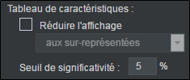
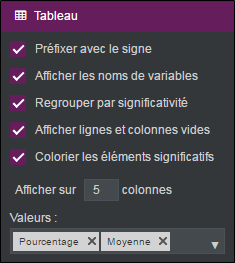

Réaliser un tableau de forces/faiblesses
Un tableau de forces/faiblesses est similaire à un tableau de caractéristiques dans la présentation. Il affiche les résultats les plus significatifs de plusieurs analyses croisées. Pour cela il faut définir une variable centrale qui est la variable à caractériser et des variables explicatives où vont se situer les éléments caractéristiques. Les variables explicatives peuvent seulement être numériques ou d’échelles car ce sont des variables de contexte.
EXEMPLE : Dans une enquête portant sur le tourisme, on peut vouloir caractériser le mode d’hébergement en fonction des caractéristiques des critères de vacances idéales : le sport, le soleil, le confort, le calme et la nature.
Pour réaliser un tableau de forces/faiblesses, procédez comme suit :
-
Cliquez sur le bouton
 .
. -
Sélectionnez Analyse avancée.
-
Cliquez sur Forces/faiblesses.
-
Glissez-déposez la variable à caractériser et des variables explicatives depuis la liste des variables disponibles.

Une fois le tableau réalisé, il est possible de changer les variables en sélectionnant l’analyse et en cliquant sur  ou en faisant clic droit éditer sur l’analyse.
ou en faisant clic droit éditer sur l’analyse.
Les options du tableau de forces/faiblesses sont identiques à celle d’un tableau de caractéristiques.
Dans l’onglet option, catégorie calcul, deux options spécifiques aux tableaux de caractéristiques apparaissent.

-
Réduire l’affichage : permet d’afficher seulement les modalités surreprésentées ou les sous-représentées. Le tableau sera plus lisible en n’affichant que les modalités surreprésentées.
-
Seuil de significativité : par défaut celui-ci est de 5%. Vous pouvez l’abaisser (par exemple à 15%), pour faire apparaître des modalités presque significatives, ou l’élever (par exemple à 1%), pour faire apparaître seulement les modalités très significatives.
Dans la catégorie tableau, plusieurs options d’analyse sont possibles.

-
Préfixer avec le signe : affiche un signe « + » si vous êtes dans le cas d’une modalité surreprésentée ou « - » si vous êtes dans le cas d’une modalité sous-représentée.
-
Afficher les noms de variables : affiche le nom des variables explicatives dans le tableau.
-
Regrouper par significativité : regroupe les modalités en catégories de surreprésentées et de sous-représentées.
-
Afficher lignes et colonnes vides : affiche les lignes et les colonnes où aucune modalité spécifique n’existe.
-
Colorier les éléments significatifs : colorie en bleu les modalités « surreprésentées » et en rouge les modalités « sous-représentées ».
-
Définir le nombre de colonnes à utiliser.
-
Choisir les Valeurs à afficher dans le tableau (effectif, pourcentage, moyenne ou valeur du test statistique).